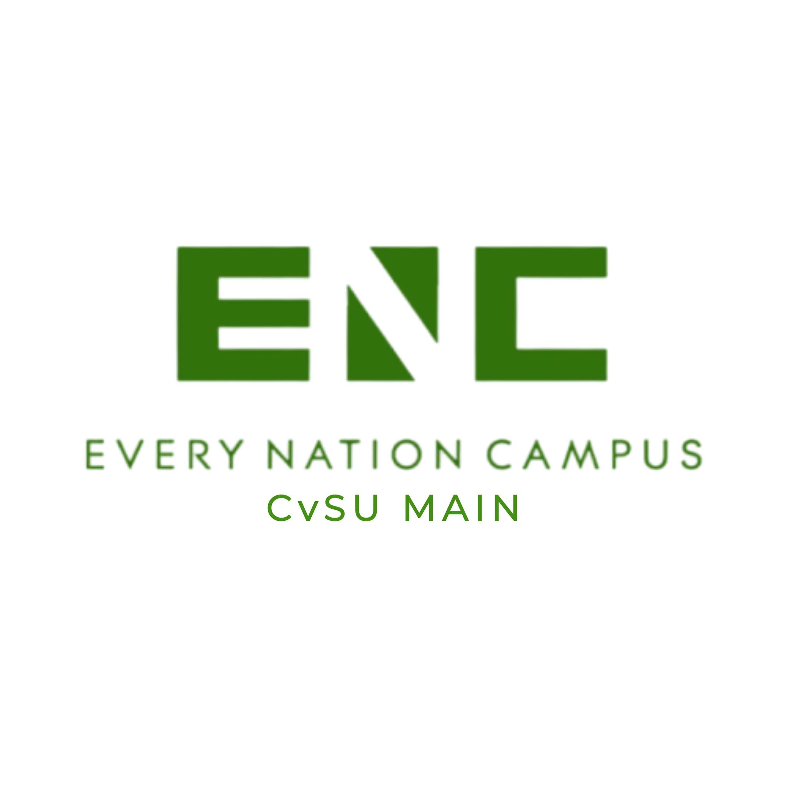

Every Nation Campus (also referred to as ENC) is a recognized religious student organization at Cavite State University (CvSU) — Main Campus, Indang, Cavite, Philippines. It serves as the campus ministry of Every Nation, a global church and campus ministry movement. ENC CvSU Main was established in September 2025 and was officially recognized by the Office of Student Affairs and Services (OSAS) in October 2025, for Academic Year 2025–2026. The organization is committed to empowering the next generation of students for LIFE — standing for Leadership, Integrity, Faith, and Excellence.
Overview

Every Nation Campus is the global campus ministry arm of Every Nation — a worldwide movement of churches and campus ministries with a presence across multiple countries. At Cavite State University, ENC operates as a recognized religious organization under the supervision of the Office of Student Affairs and Services (OSAS), serving the broader student body regardless of college or program affiliation.
The organization describes itself as a global community of students who believe that "changing the world starts when we change the campus." At CvSU Main, ENC is dedicated to meeting students where they are — providing a community of faith, fellowship, and purposeful growth anchored on strong biblical values.
ENC CvSU Main holds the distinction of being one of the newest recognized organizations on campus, having been established in September 2025 and formally recognized just weeks later in October 2025, reflecting the organization's swift establishment and the enthusiasm of its founding members.
History and Background
Origins and Global Ministry
Every Nation is an international church and campus ministry organization that operates in numerous countries around the world. Its campus ministry wing — Every Nation Campus — carries a singular conviction: that the next generation of students, when reached and empowered, can become catalysts for transformation not only in their universities but in society at large.
The global mission of Every Nation Campus is rooted in the belief that young people are filled with vigor, passion, and creativity that could transform societies and change the world — yet many are also lost, confused, or chasing pursuits that leave their potential untapped and their lives without clear direction. By reaching the next generation through the campus, Every Nation Campus aims to give students hope and help them fulfill their destiny as world-changers and nation-builders.
CvSU Main Chapter
The CvSU Main chapter of Every Nation Campus was established in September 2025. Within the same academic year, the organization underwent the formal recognition process of Cavite State University and was officially recognized by the Office of Student Affairs and Services (OSAS) in October 2025. This recognition certifies the organization as a legitimate student organization operating under the university's policies and guidelines for Academic Year 2025–2026.
Mission and Vision
ENC's mission is centered on reaching the whole world through the university campus. This is carried out by meeting students where they are, building strong biblical foundations in their lives, equipping them for ministry and service, and empowering them to lead in their respective fields and communities.
The organization envisions a generation of students who are not only academically excellent but also grounded in faith and character — graduates who carry their values into their professions, communities, and beyond. ENC believes that transformation begins on the campus, making the university an essential mission field.
The LIFE Framework
Every Nation Campus CvSU Main is guided by a four-part framework known as LIFE — an acronym that captures the four core areas in which the organization is committed to building up its members. This framework serves as both the identity and the program direction of ENC at CvSU.
Opportunities for Members
Students who join Every Nation Campus at CvSU gain access to a supportive faith community and a range of meaningful opportunities for personal growth and service. Members are given avenues to engage with their fellow students through evangelism, community outreach, and ministry activities grounded in the organization's LIFE framework.
Beyond spiritual formation, ENC provides its members with opportunities to develop leadership skills, cultivate integrity in their daily lives, and strive for excellence in their academic and professional pursuits — all within a community that values both faith and purposeful action.
Activities and Programs
Every Nation Campus CvSU Main regularly organizes and participates in a variety of activities designed to nurture the faith, fellowship, and growth of its members and the wider student community. Key programs and activities include:
Prayer Walks
Prayer Walks are organized gatherings where members walk through the campus while praying together — interceding for the university, fellow students, faculty, and the broader community. This activity reinforces the community's commitment to the spiritual well-being of the campus.
LIFE Seminars
LIFE Seminars are structured learning sessions aligned with the four pillars of the organization's LIFE framework — Leadership, Integrity, Faith, and Excellence. These seminars aim to equip students with practical knowledge and biblical principles applicable to their academic journey and daily lives.
Campus Evangelism
Campus Evangelism involves outreach efforts to connect with students across CvSU, sharing the message of faith and inviting them into the Every Nation Campus community. This is carried out through personal conversations, events, and collaborative activities that reflect the organization's heart for the next generation.
Victory Groups
Victory Groups are small-group gatherings — sometimes called cell groups or discipleship groups — where members meet regularly for Bible study, prayer, and mutual accountability. These intimate settings foster deeper relationships and provide a space for students to grow in their faith together.
Tagline
This tagline encapsulates the core conviction of Every Nation Campus — that meaningful, lasting change in the world begins within the walls of the university. By investing in students and building them up in faith, character, and leadership, ENC believes that the campus is one of the most strategic places to effect transformation in society.
References
- Every Nation Campus CvSU Main — Organization Inquiry for KABSU Wiki. Submitted May 2026.
- Every Nation Campus Philippines — Official Website and Facebook Page. facebook.com/encampusph
- Cavite State University — Office of Student Affairs and Services. List of Recognized Student Organizations, A.Y. 2025–2026.
- Every Nation Campus CvSU Main — Official Facebook Page. facebook.com/enc.cvsumain
- KABSU Wiki Editorial Team. Organizations — Every Nation Campus. May 2026.